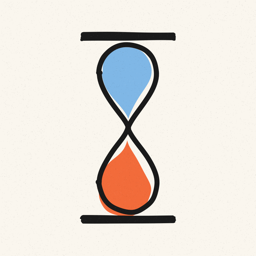

喝水走走
久坐族的喝水與起身提醒
隱私權政策
生效日期：2026 年 11 月 17 日
app 會存哪些資料
為了提醒你、顯示進度，app 會在你的裝置上存這些東西：
- 你按下「喝了」「走了」或通知上「完成」的時間，以及是喝水還是走動。不記錄喝了多少。
- 你的設定：提醒間隔、每日目標、提醒時段長度、提示聲。
- 目前這段提醒的排程（下一次幾點提醒）。
這些資料只存在裝置本身，不會傳到開發者或任何第三方的伺服器。app 沒有帳號系統，也不需要登入。
iPhone 和 Apple Watch 之間的傳送
如果你有配對的 Apple Watch，iPhone 和手錶會透過 Apple 提供的配對連線（WatchConnectivity）直接互傳上面那些紀錄和設定，讓兩邊顯示一樣的進度。這段傳送只發生在你自己的兩台裝置之間，不經過開發者的伺服器。
不做的事
- 不收集姓名、電子郵件、位置、健康資料或裝置識別碼。
- 沒有廣告，不追蹤你在其他 app 或網站上的行為。
- 沒有使用任何分析工具或第三方套件來回報使用情況。
- 不讀取也不寫入 iPhone 的「健康」app。
通知
提醒是由你的 iPhone 和 Apple Watch 在本機排好的通知，不是從伺服器推送過來的。你可以隨時在「設定 → 通知 → 喝水走走」關掉。
購買
喝水走走是一次買斷的付費 app，付款由 Apple 的 App Store 處理。開發者不會拿到你的付款資料。
刪除資料
在 app 的「統計」頁可以把今天的紀錄往左滑刪除。要刪除全部資料，直接刪除 iPhone 和 Apple Watch 上的 app 就好，資料會一起清掉。
兒童
app 不收集任何人的個人資料，包括 13 歲以下的兒童。
政策變更
如果之後的版本改變了資料的處理方式，會先更新這一頁並修改上面的生效日期。
常見問題
時間到了卻沒收到提醒
- 到 iPhone 的「設定 → 通知 → 喝水走走」，確認「允許通知」是打開的。
- 主畫面要按過「開始提醒」，而且還在提醒時段內。時段到了會自動停止（預設 10 小時，可在設定裡改）。
- 開著勿擾或其他專注模式時，提醒會被系統暫時收起來。
手機靜音時不會震動
到 iPhone 的「設定 → 聲音與觸覺回饋 → 觸覺回饋」，選「永遠播放」或「『靜音模式』中播放」。同時確認「設定 → 通知 → 喝水走走」裡的「聲音」是打開的，關掉的話通知不會響也不會震。
Apple Watch 沒有震
- 在手錶上打開一次喝水走走，跳出通知權限時選「允許」。
- 手錶要戴在手上並且已經解鎖。
- 在 iPhone 的「Watch」app → 通知 → 喝水走走，確認手錶的通知是打開的。
手錶顯示「請靠近 iPhone」
從手錶開始或停止提醒，需要 iPhone 在附近而且藍牙或 Wi-Fi 開著。「喝了」「走了」不受影響：iPhone 不在身邊時會先存在手錶上，連上之後自動補傳。
改了間隔卻沒變
正在提醒的時候改設定，會在下一次按「開始提醒」時生效。先按「停止提醒」再重新開始就可以。
聯絡我們
有問題或建議，歡迎寄信到 dannytanwork0206@gmail.com。